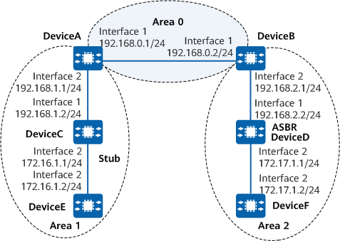

Example for Configuring an OSPF Stub Area
Networking Requirements
Figure 1 shows a network where all devices run OSPF, and the entire AS is divided into three areas. DeviceA and DeviceB function as ABRs to advertise inter-area routes, and DeviceD functions as the ASBR to import external routes (static routes).
To reduce the number of LSAs advertised to area 1 without compromising route reachability, configure area 1 as a stub area.

In this example, interface 1 and interface 2 represent 10GE 0/0/1 and 10GE 0/0/2, respectively.

Device |
Router ID |
Process ID |
IP Address |
|---|---|---|---|
DeviceA |
1.1.1.1 |
1 |
Area 0: 192.168.0.0/24 Area 1: 192.168.1.0/24 |
DeviceB |
2.2.2.2 |
1 |
Area 0: 192.168.0.0/24 Area 2: 192.168.2.0/24 |
DeviceC |
3.3.3.3 |
1 |
Area 1: 192.168.1.0/24 and 172.16.1.0/24 |
DeviceD |
4.4.4.4 |
1 |
Area 2: 192.168.2.0/24 and 172.17.1.0/24 |
DeviceE |
5.5.5.5 |
1 |
Area 1: 172.16.1.0/24 |
DeviceF |
6.6.6.6 |
1 |
Area 2: 172.17.1.0/24 |
Precautions
During the configuration, note the following:
- The backbone area cannot be configured as a stub area.
- A device in a stub area cannot be used as an ASBR. As such, AS external routes cannot be transmitted in the stub area.
- A virtual link cannot pass through a stub area.
- To improve security, OSPF area authentication or interface authentication is recommended. For details, see "Improving OSPF Network Security." OSPF area authentication is used as an example. For details, see Example for Configuring Basic OSPF Functions.
Configuration Roadmap
The configuration roadmap is as follows:
Configure basic OSPF functions on each device to ensure routing reachability.
Configure a static route on DeviceD, and configure DeviceD to import the route into the OSPF process.
Configure area 1 as a stub area by running the stub command on all devices in area 1, and check the OSPF routing information on DeviceC.
Stop DeviceA from advertising Type 3 LSAs to the stub area, and check the OSPF routing information on DeviceC.
Procedure
- Assign an IP address to each interface. For detailed configurations, see Configuration Scripts.
- Configure basic OSPF functions. For details, see Example for Configuring Basic OSPF Functions.
- Configure DeviceD to import a static route.
[DeviceD] ip route-static 10.0.0.0 8 null 0 [DeviceD] ospf 1 [DeviceD-ospf-1] import-route static type 1 [DeviceD-ospf-1] quit
# Check the ABR and ASBR information on DeviceC.
[DeviceC] display ospf abr-asbr OSPF Process 1 with Router ID 3.3.3.3 Routing Table to ABR and ASBR Type Destination Area Cost NextHop RtType Intra-area 1.1.1.1 0.0.0.1 1 192.168.1.1 ABR Inter-area 4.4.4.4 0.0.0.1 3 192.168.1.1 ASBR# Check information about the OSPF routing table on DeviceC.
If DeviceC resides in a common area, AS external routes exist in the routing table.
[DeviceC] display ospf routing OSPF Process 1 with Router ID 3.3.3.3 Routing Tables Routing for Network Destination Cost Type NextHop AdvRouter Area 172.17.1.0/24 4 Inter-area 192.168.1.1 1.1.1.1 0.0.0.1 192.168.0.0/24 2 Inter-area 192.168.1.1 1.1.1.1 0.0.0.1 192.168.2.0/24 3 Inter-area 192.168.1.1 1.1.1.1 0.0.0.1 Routing for ASEs Destination Cost Type Tag NextHop AdvRouter 10.0.0.0/8 4 Type1 1 192.168.1.1 4.4.4.4 Total Nets: 4 Intra Area: 0 Inter Area: 3 ASE: 1 NSSA: 0 - Configure area 1 as a stub area.
# Configure DeviceA.
[DeviceA] ospf 1 [DeviceA-ospf-1] area 1 [DeviceA-ospf-1-area-0.0.0.1] stub [DeviceA-ospf-1-area-0.0.0.1] quit [DeviceA-ospf-1] quit
# Configure DeviceC.
[DeviceC] ospf 1 [DeviceC-ospf-1] area 1 [DeviceC-ospf-1-area-0.0.0.1] stub [DeviceC-ospf-1-area-0.0.0.1] quit [DeviceC-ospf-1] quit
# Configure DeviceE.
[DeviceE] ospf 1 [DeviceE-ospf-1] area 1 [DeviceE-ospf-1-area-0.0.0.1] stub [DeviceE-ospf-1-area-0.0.0.1] quit [DeviceE-ospf-1] quit
# Check information about the routing table on DeviceC.
After the area where DeviceC resides is configured as a stub area, a default route rather than AS external routes exists in the routing table.
[DeviceC] display ospf routing OSPF Process 1 with Router ID 3.3.3.3 Routing Tables Routing for Network Destination Cost Type NextHop AdvRouter Area 0.0.0.0/0 2 Inter-area 192.168.1.1 1.1.1.1 0.0.0.1 172.17.1.0/24 4 Inter-area 192.168.1.1 1.1.1.1 0.0.0.1 192.168.0.0/24 2 Inter-area 192.168.1.1 1.1.1.1 0.0.0.1 192.168.2.0/24 3 Inter-area 192.168.1.1 1.1.1.1 0.0.0.1 Total Nets: 4 Intra Area: 0 Inter Area: 4 ASE: 0 NSSA: 0 - # Stop DeviceA from advertising Type 3 LSAs to the stub area.
[DeviceA] ospf [DeviceA-ospf-1] area 1 [DeviceA-ospf-1-area-0.0.0.1] stub no-summary [DeviceA-ospf-1-area-0.0.0.1] quit [DeviceA-ospf-1] quit
Verifying the Configuration
# Check information about the OSPF routing table on DeviceC.
[DeviceC] display ospf routing
OSPF Process 1 with Router ID 3.3.3.3
Routing Tables
Routing for Network
Destination Cost Type NextHop AdvRouter Area
0.0.0.0/0 2 Inter-area 192.168.1.1 1.1.1.1 0.0.0.1
Total Nets: 1
Intra Area: 0 Inter Area: 1 ASE: 0 NSSA: 0
After the advertisement of summary LSAs to the stub area is disabled, the number of routing entries on devices in the stub area further decreases, and only the default route to a destination beyond the stub area is reserved.
Configuration Scripts
-
# sysname DeviceA # router id 1.1.1.1 # interface 10GE0/0/1 ip address 192.168.0.1 255.255.255.0 # interface 10GE0/0/2 ip address 192.168.1.1 255.255.255.0 # ospf 1 area 0.0.0.0 network 192.168.0.0 0.0.0.255 area 0.0.0.1 network 192.168.1.0 0.0.0.255 stub no-summary # return
-
# sysname DeviceB # router id 2.2.2.2 # interface 10GE0/0/1 ip address 192.168.0.2 255.255.255.0 # interface 10GE0/0/2 ip address 192.168.2.1 255.255.255.0 # ospf 1 area 0.0.0.0 network 192.168.0.0 0.0.0.255 area 0.0.0.2 network 192.168.2.0 0.0.0.255 # return
-
# sysname DeviceC # router id 3.3.3.3 # interface 10GE0/0/1 ip address 192.168.1.2 255.255.255.0 # interface 10GE0/0/2 ip address 172.16.1.1 255.255.255.0 # ospf 1 area 0.0.0.1 network 192.168.1.0 0.0.0.255 network 172.16.1.0 0.0.0.255 stub # return
-
# sysname DeviceD # router id 4.4.4.4 # interface 10GE0/0/1 ip address 192.168.2.2 255.255.255.0 # interface 10GE0/0/2 ip address 172.17.1.1 255.255.255.0 # ospf 1 import-route static type 1 area 0.0.0.2 network 192.168.2.0 0.0.0.255 network 172.17.1.0 0.0.0.255 # ip route-static 10.0.0.0 255.0.0.0 NULL0 # return
-
# sysname DeviceE # router id 5.5.5.5 # interface 10GE0/0/2 ip address 172.16.1.2 255.255.255.0 # ospf 1 area 0.0.0.1 network 172.16.1.0 0.0.0.255 stub # return
-
# sysname DeviceF # router id 6.6.6.6 # interface 10GE0/0/2 ip address 172.17.1.2 255.255.255.0 # ospf 1 area 0.0.0.2 network 172.17.1.0 0.0.0.255 # return